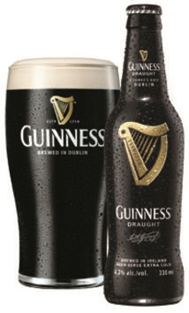

ISTITUTO STATALE DI ISTRUZIONE SUPERIORE TURISTICO
ECONOMICO - AZIENDALE E PER L'ENOGASTRONOMIA
BONALDO STRINGHER – UDINE
Tesina di maturità redatta da:
ANDREA CHIANDONI
CL. 5 B Sala e vendita.
"LA BIRRA"
ANNO SCOLASTICO 2015/2016
Introduzione
Vorrei cominciare il lavoro partendo dalle mie esperienze personali che hanno contribuito a farmi scegliere la birra come argomento d’esame.
Sono infatti diverse quelle che ho potuto fare in questi ultimi anni di scuola, tra stage e concorsi: sono stato in diversi locali e ho scoperto un grande interesse per la birra, fusti di tutti i tipi (franziskaner, poretti e villacher) offerti alla clientela e nei magazzini. Molte volte ho visto vendere la birra in bottiglia ma, per la maggior parte dei casi, era presentata alla spina. Alle mie domande i datori di lavoro rispondevano fornendomi spiegazioni e particolari sulla bevanda. L’anno scorso ho avuto anche la fortuna di partecipare a un concorso internazionale a Cervia, riguardante il mio settore, cioè quello della sala, che consisteva in una gara di preparazione dei tavoli e di servizio al cliente. La particolarità di questo concorso era il fatto che si svolgeva tutto in inglese, poichÉ i partecipanti arrivavano da tutta Europa. è stata una grande esperienza e sono riuscito a vincere una medaglia di bronzo.
Che cosa c’entra con la birra?
Bene, durante questi cinque giorni in Emilia Romagna, nei momenti liberi , mentre visitavo la città, ho scoperto una birreria e qui ho avuto occasione di parlare a lungo con il proprietario e comprare un paio di birre (rosse e affumicate).Sono stato ,in seguito a Ravenna ,e ,anche in questa città ho visitato una birreria e un birrificio, che ho trovato fortunatamente aperto, dove sono potuto entrare e osservare il sistema di produzione della birra di quella città (bizantina).A questo punto qualcuno potrebbe chiedersi quale sia la differenza tra birreria e birrificio: in poche parole, la birreria è il luogo dove si vendono le birre, il birrificio dove si producono. Si può dire quindi che la birra sia la mia bevanda preferita, specialmente quella amara e che io sia appassionato anche alla sua produzione.
M’ILLUPPOLO D’IMMENSO.
All’origine della civiltà
In epoca preistorica gli uomini conducevano un'esistenza nomade, seguendo gli animali da cacciare e nutrendosi di frutti maturi e di bacche. A quei tempi i semi delle graminacee spontanee, troppo piccoli e complicati da sgusciare, non erano adatti come cibo. Tuttavia, se lungamente masticati, lasciavano un buon sapore in bocca, come del resto anche altri vegetali, il che probabilmente spinse l'uomo primitivo a seminarli e conservarli, iniziando così a coltivarli. Quelle piantagioni primordiali diedero il via a una delle tappe più significative nella storia dell'umanità, l'agricoltura, che trasformò l'uomo da cacciatore- raccoglitore nomade a contadino sedentario. è stato accertato che quelle piante erbacee si evolsero nei moderni cereali e ortaggi, finalmente adatti a essere consumati come cibo, con le conseguenze che tutti abbiamo imparato a scuola: l'uomo creò i primi insediamenti per coltivare e proteggere i prodotti dei suoi campi. Nacquero così nuove strutture sociali e con esse il commercio, la guerra, la scrittura, l'arte, e in breve la civiltà.
Ma torniamo alla nostra birra: i semi dell'orzo, giacchÉ di questo cereale si tratta, duri da masticare, avevano un sapore gradevole e dolce. Masticandoli e mescolandoli con l'acqua in un recipiente, dopo un po’ si otteneva una bevanda euforizzante: ecco, la birra primordiale! Le più antiche testimonianze, risalgono al tempo dei sumeri, mentre alcuni geroglifici egizi descrivono questa tecnica, semplice e al tempo stesso affascinante: l’orzo veniva dapprima masticato per rompere le cariossidi, e in questa fase la saliva scioglieva gli amidi contenuti nei semi. In poche parole la saliva, ricca di amilasi, sostituiva l'odierno processo di ammostamento. In seguito nell'anfora si compiva in maniera grossolana la fermentazione alcolica, grazie alla presenza dei lieviti spontanei.
Storia
è impossibile stabilire con esattezza quando e dove sia nata la birra ma è molto probabile che essa sia stata scoperta casualmente migliaia di anni fa assieme alla fermentazione, fenomeno assolutamente naturale che può avvenire dappertutto purchÉ le temperature non siano eccessivamente rigide.
Probabilmente la fermentazione è stata scoperta osservando le strane reazioni che alcuni animali avevano dopo aver mangiato grosse quantità di particolari cibi.
Gli elefanti selvaggi, ad esempio, spesso si cibavano di frutti abbandonati e fermentati spontaneamente che li facevano barcollare e sbattere freneticamente le grandi orecchie per rinfrescare le loro teste in preda alle vertigini.
Un’ipotesi più azzardata, quasi una leggenda, sostiene che la birra sia stata scoperta casualmente dopo che un contadino sumero ha dimenticato una ciotola con una zuppa di pane sotto la pioggia per diversi giorni.
Alcuni microrganismi presenti nell’aria sono poi finiti in quella zuppa e, considerando che la temperatura a quel tempo non doveva essere inferiore ai 30 gradi, l’intruglio ha iniziato a fermentare. Recuperata la ciotola il contadino ha poi bevuto quello strano liquido che gli ha provocato uno strano stato di ebbrezza. Il contadino allora, una volta smaltito l’effetto della “sbronza”, ha ripetuto e perfezionato il procedimento dando così vita alla prima birra della storia.
Nel corso della storia però la considerazione data alla birra variava da civiltà a civiltà. Presso i Sumeri, gli Assiro-Babilonesi, gli Egiziani e i Cretesi era una bevanda sacra e di grande prestigio, a cui veniva data estrema importanza tanto che, in alcuni casi, la sua produzione era strettamente controllata dallo Stato. I Romani e i Greci invece la ritenevano una bevanda poco nobile, adatta ai barbari e assolutamente non paragonabile al vino di cui erano grandi consumatori.
Successivamente in Europa questa bevanda ha conosciuto una notevole diffusione, soprattutto nelle regioni settentrionali, dove il suo processo produttivo è stato perfezionato dai Galli e dai Celti prima e dai monaci medievali poi.
Materie prime
- L'acqua
- I Cereali
- L’orzo
- Il malto
- Il luppolo
- il lievito
La birra è fatta per il 95% circa di acqua, che ha un’importanza decisiva sul prodotto finale. Essa deve essere non soltanto potabile, ma anche perfettamente limpida, del tutto inodore e batteriologicamente pura.
L'acqua superficiale, ricca di sostanze organiche e di microrganismi, è poco adatta alla fabbricazione della birra, per la quale è invece consigliata l'acqua di sorgente o di pozzo, pura e potabile.
Più l’acqua è dura e ricca di minerali, maggiori saranno i tannini estratti dal malto e dai luppoli, da cui risulterà una struttura più robusta e un gusto aspro. Alcune delle località più famose al mondo per la produzione di birra, come Pilsen (Repubblica Ceca), Monaco, Dortmund (Germania) e Burton-on-Trent(Gran Bretagna) devono la loro fama nel mondo birrario proprio alla particolarità delle loro acque.
Ad esempio l’acqua di Pilsen, povera di sali e dunque dolce, è particolarmente indicata per le birre chiare, leggere, ben luppolate (come nel caso delle Pilsen) mentre quella di Monaco, più dura, ricca di carbonati di calcio, consente di produrre birre scure, poco luppolate. L'acqua “giusta” è un fattore importante per un certo tipo di birra ma di secondo ordine rispetto alla qualità delle materie prime, quali i cereali ed il lievito usato.
I cereali sono colture erbacee che, grazie alla clorofilla e all'energia solare, riescono, come tutte le piante, a comporre gli amidi che, partendo da anidride carbonica dell'aria, si accumulano nei semi, producendo al contempo l'ossigeno che noi respiriamo. Il birraio utilizza questi amidi che si trasformano in zuccheri grazie all'azione degli enzimi dei cereali stessi. A questo punto il lievito fermenta gli zuccheri che producono l'alcol etilico e l’anidride carbonica presenti nella birra.
Il cereale più importante per la produzione della birra è l’orzo, una pianta robusta e di coltivazione pressochÉ universale dalla cui germinazione si ricava il malto.
Questo importante cereale si conosce, fin dall’età della pietra. Il suo chicco, oblungo, rigonfio e appuntito alle due estremità è suddiviso longitudinalmente da un solco mediano ed è ben protetto dalla scorza. Esso sopporta con disinvoltura lunghi periodi di conservazione mentre la sua composizione chimica (amido 54%, altri carboidrati 12%, proteine 10%, fibra grezza 5%, ceneri 2,5%) è la più adatta tra quelle disponibili in natura per la produzione della birra.
L’orzo influenza il colore, la pienezza e il corpo, meno direttamente, l’aroma, il sapore e la leggerezza della nostra bevanda.
Ne esistono di due tipi: l’Hordeum vulgare, con quattro o sei chicchi per ogni nodo della spiga e l’Hordeum disticum, con due soli chicchi per nodo ed è quello che viene impiegato di più nella produzione della birra. Ad esso normalmente si aggiungono anche altri cereali, come riso, mais o miglio, che conferiscono alla birra caratteristiche peculiari.
L'orzo cresce in ogni regione, ad un'altezza che parte dal livello del mare fino ad oltre 1600 metri e si presta molto bene quale coltivazione alternativa dove altri cereali danno rendimenti scarsi.
Il malto non è un cereale che cresce in natura ma si ricava dall’orzo (e da altri cereali succedanei come mais, riso e frumento) attraverso il processo di germinazione che avviene facendo germogliare i chicchi d’orzo dopo averli messi a bagno in acqua.
Con questo sistema si sviluppano gli enzimi che permettono di trasformare l'amido in essi contenuto in zuccheri solubili in acqua.
Da mille anni a questa parte l’aromatizzazione della birra è affidata essenzialmente al luppolo divenuto un ingrediente “ufficiale” della birra solo nel XV secolo grazie alla “legge della purezza “approvata nel 1516 da Guglielmo IV di Baviera.
Prima che i monaci medievali scoprissero la qualità del fiore di questa pianta, l’aromatizzazione della birra veniva ottenuta in vari modi, utilizzando i più svariati tipi di erbe, in particolare rosmarino, alloro, mirica e varie spezie.
Il luppolo conferisce alla birra un aroma particolare ed il tipico gusto amaro, contribuisce alla stabilità della schiuma e migliora le proprietà conservanti della birra. la sua coltivazione avviene soltanto in zone dal clima temperato fresco, perchÉ sensibile e delicato. Le zone più famose in cui crescono luppoli di ottima qualità sono Hallertau, Spalt, Hersbruck e Tettnang (Germania), Saaz e Auscha (Repubblica Ceca), Paperinge (Belgio), Alsazia (Francia), Willamate (Oregon), Yakima (Washington), Sacramento (California) e Boise (Idaho) negli Stati Uniti, Stiria, Baka (ex-Iugoslavia) e il Kent (Inghilterra).
Si distinguono principalmente in luppolo da aroma e da amaro. Le varietà amaricanti contengono molti alfa acidi come l’Herkules o il Magnum.
Le varietà aromatiche, caratterizzate da note erbacee-terrose, sono l’Hallertau e il Kent (entrambe europee)
Il gusto della birra, tuttavia, non è influenzato soltanto dalla varietà di luppolo prescelta, ma anche dal dosaggio e dal momento in cui l’ingrediente viene aggiunto al composto.
Per ottenere un gusto amaro, il luppolo va aggiunto nella fase iniziale di bollitura del mosto.Per ottenere un gusto più aromatico, il luppolo viene aggiunto successivamente, persino a fine bollitura. In tal modo i composti volatili non evaporano nÉ si disperdono.
Si può affermare che se il malto è il corpo di una birra, il luppolo ne è l’anima.
La fermentazione della birra non sarebbe possibile senza il lievito, un microrganismo grande pochi millesimi di millimetro. Esso, si nutre e produce diverse sostanze come alcol etilico, anidride carbonica e altre ancora, mentre con le sue reazioni biochimiche libera energia e si trasforma in calore.
Il lievito si usa anche per produrre il pane, il vino e i distillati ma per ogni prodotto se ne usa uno specifico, sempre della stessa famiglia dei saccaromiceti, ognuno dei quali ha la facoltà di produrre un aroma tipico che caratterizza il prodotto finale.
Il lievito fu osservato con l’ausilio di un microscopio per la prima volta nel 1680 dallo scienziato olandese Van Leeuwenhoek, ma fu però nel 1875, lo scienziato danese Emil Christian Hansen a isolare il primo ceppo di lievito puro e studiare tutte le sue funzioni. Per la birra i lieviti utilizzati sono due: il Saccharomyces Cerevisiae (alta) e il Saccharomyces Carlsbergensis (bassa).
Il processo di produzione
Il processo produttivo inizia con la macinatura
dei chicchi di malto, per rompere le scorze.
Il macchinario utilizzato è un mulino a sei rulli,
così il malto viene macinato finemente,
senza danneggiare i gusci dei semi (scorze).
Questo mulino è dotato di 3 coppie di rulli in acciaio
che rimuove efficacemente l’amido dalle scorze.
2. Ammostamento
Durante questa fase, il malto macinato e l’acqua vengono miscelati per formare un impasto e riscaldati affinchÉ i composti del malto vengano rilasciati nell’acqua.
L'impasto viene riscaldato a una serie di temperature specifiche per attivare i vari enzimi che degradano le molecole di amido, zucchero e proteine l'ammostamento si raggiungono diversi livelli di temperatura definiti “soste”, responsabili dei diversi sapori della birra.
La sosta più importante è quella tra i 62° e i 67° gradi celsius, in quanto si attivano gli enzimi beta-amilasi che scindono l’amido del malto, formando uno zucchero fermentescibile, il maltosio.
Anche le proteine, riducono a una temperatura specifica, intorno ai 45° gradi celsius.
Nella sosta delle proteine è importante stare attenti alla durata, perchÉ incide sulla limpidezza e sulla schiuma.
A fine ammostamento si porta la temperatura a 75° gradi per disattivare le reazioni enzimatiche.
3. Filtrazione
Consiste nel separare le scorze e residui sospesi dal mosto, chiamati anche trebbie.
Per fare ciò il mosto viene pompato in un tino di filtrazione (lauter tun), dotato di un fondo perforato per far defluire il primo mosto.
Successivamente viene aggiunta altra acqua calda sulle trebbie per estrarre ulteriori zuccheri, ancora presenti.
4. Bollitura
Il mosto, insieme ai luppoli, viene fatto bollire nell’apposita caldaia.
Durante la bollitura si distruggono gli ultimi enzimi e
lo si sterilizza, eliminando così i microrganismi.
Le proteine si coagulano
e quindi vanno rimosse.
Controllando il volume dei liquidi evaporati,
si può regolare il contenuto zuccherino e
quindi il grado alcolico desiderato.
5. Raffreddamento e centrifuga
Dopo la bollitura, è necessario separare le sostanze solide rimaste.
Per fare ciò si ricorre a una centrifuga, nella quale si forma un mulinello in cui rimangono le fecce sul fondo.
Qua si aggiungono altri luppoli per conferire aromi alla birra.
A questo punto il mosto va raffreddato a una temperatura di 20°-25° gradi per le birre ad
alta fermentazione o a 10°-15° gradi per
quelle a bassa fermentazione.
Per il raffreddamento viene utilizzato uno scambiatore a piastre.
6. Fermentazione
Il mosto viene messo in un tino di fermentazione
e aggiunti i lieviti.
Il lievito metabolizza gli zuccheri trasformandoli in alcol e
anidride carbonica.
è importante che sia ben arieggiato in quanto
è necessario l’ossigeno
Più è alta la temperatura di fermentazione,
maggiori saranno gli aromi prodotti dal lievito.
7. Maturazione e confezionamento
Le birre a bassa fermentazione andranno condizionate in tini a 0° gradi,
mentre quelle ad alta in tini a 15°-20° per quattro o più settimane.
Durante il condizionamento
il lievito continua a fermentare.
La saturazione della birra è
data dalla pressione della co2 creata nel tino,
inoltre l’alcol matura.
Questa fermentazione è detta secondaria e
infine i lieviti e le proteine si depositano sul fondo
e a questo punto si può imbottigliare la birra.
Stili
Esistono innumerevoli stili e tipi di birre, uno stile riflette l’epoca e il luogo di origine di una birra
e si evolve a seconda delle tecniche e ai gusti dei consumatori.
Si possono suddividere in base alla fermentazione (quindi in base ai lieviti):
BIRRE A FERMENTAZIONE BASSA
Lager: Termine generico che indica una birra prodotta con fermentazione bassa.
Bock: Birra bavarese, corposa, alcolica e con forte aroma di malto.
Export: Birra non molto secca, poco luppolata e moderatamente alcolica.
Icebeer: Ottenuta con il metodo ice brewing, è una birra che che a differenza delle altre viene fermentata a una temperatura di -4° gradi.
Pils o Pilsner: una delle tipologie più diffuse al mondo, birra chiara, della Repubblica ceca, amarognola e mediamente alcolica (più amara delle lager).
BIRRE A FERMENTAZIONE ALTA
Ale: Tipologia di birra inglese, non pastorizzata, nÉ filtrata, si suddivide in altre versioni.
-bitter ale: color rame, luppolata, di gusto amaro
-Mild ale: poco alcolica, moderatamente amara, scura
-old ale: scura, molto alcolica, detta strong ale.
-Scotch ale: Scozzese, scura, aroma di malto, abbastanza alcolica e corposa.
Altbier: tipica birra di Düsseldorf, pastosa non molto alcolica
Stout: Irlandese, molto scura, molto amara, corposa e alcolica
Trappiste: Colore dorato scuro, gusto complesso, molto alcolica, è prodotta con rifermentazione in bottiglia da cinque monasteri belgi e uno olandese.
Weizenbier: Significa letteralmente “birra di frumento”, sono birre tedesche prodotte con orzo e grano, fermentate con lieviti e acido lattico, che conferisce quel sapore leggermente acidulo. In genere viene effettuata una rifermentazione in bottiglia con l’aggiunta di lieviti e zuccheri.
BIRRE A FERMENTAZIONE SPONTANEA
Tipologia di birre che resiste in Belgio, limitata nella zona sud-ovest di Bruxelles.
Il mosto viene fatto fermentare liberamente in gigantesche vasche all’aria aperta nei mesi freddi. La fermentazione è quindi resa possibile dai particolari batteri.
Questi lieviti, che si trovano nell’aria, vengono naturalmente a contatto con il mosto, si moltiplicano ed effettuano la trasformazione degli zuccheri in alcol. In questa famiglia molto ampia di lieviti naturali ne sono stati individuati alcuni, tra cui “Batteriomyces Bruxellensis” (deriva appunto dalla città Bruxelles). La birra così prodotta si chiama Lambic e il risultato è una birra dal gusto assai particolare.
Un Altro tipo è la Grueze, ottenuta unendo una lambic giovane e una vecchia.
Marche mondiali
Ci sono innumerevoli marche in tutto il mondo, tra le più importanti troviamo:
BUDWEISER: una delle birre lager più diffuse. Di origine americana, è una birra chiara e leggera.
Tipo di birra - Lager
Nazione - Stati Uniti
Gradazione alcolica - 5 % vol.
Colore - Giallo dorato
Tipo di fermentazione - bassa
Temperatura di servizio - 6-9 °C
HEINEKEN: birra olandese premium lager, è molto famosa e pubblicizzata,
a bassa fermentazione di colore oro chiaro. Gusto equilibrato, aroma delicatamente maltato e luppolato.
Tipo di birra - Lager
Nazione - Olanda
Gradazione alcolica - 5 % vol.
Colore - Oro chiaro
Tipo di fermentazione - bassa
Temperatura di servizio - 6 °C

CORONA: Chiamata anche Corona Extra, è una delle birre più conosciute e diffuse al mondo,
presente in circa 150 paesi. Lager, Frizzantezza moderata, corpo leggero, aspetto limpido. Amaro assente, schiuma sottile.
La classica fetta di limone (o lime) che si accompagna con la Corona Extra prende spunto dai muratori messicani, che durante il lavoro bevono questa birra per dissetarsi, e appoggiano una fetta di limone (o lime) sulla bottiglia, per mantenere lontani gli insetti.
Tipo di birra - Lager
Nazione - Messico
Gradazione alcolica - 4,6 % vol.
Colore - Oro chiaro
Tipo di fermentazione - bassa
Temperatura di servizio - 6 °C
BECK’S: Pils prodotta a bassa fermentazione dal colore chiaro. Gusto fresco ed equilibrato, con retrogusto piacevolmente amaro dal carattere deciso.
Tipo di birra - Pils
Nazione - Germania
Gradazione alcolica - 5 % vol.
Colore - chiaro
Tipo di fermentazione - bassa
Temperatura di servizio - 6 °C
GUINNESS: La parola birra in Irlanda è innanzitutto sinonimo di Guinness, la birra più bevuta in Irlanda e, forse, nel mondo. Di colore nero opaco schiuma cremosa, densa e persistente. Offre un aroma intenso di tostato con un gusto dall’impatto amaro, con gusto di caffè e cioccolato amaro arricchito da note fruttate e di caramello. La particolarità di questa birra è che va servita in due tempi (3/4 di bicchiere prima, dopo qualche minuto, il restante 1/4).
Tipo di birra - Stout
Nazione - Irlandese
Gradazione alcolica - 4,2 % vol.
Colore - Rubino scuro
Tipo di fermentazione - Alta
Temperatura di servizio - 6 °C
FRANZISKANER (HEFE): Weizen di frumento prodotta ad alta fermentazione di colore chiaro, naturalmente velato. Gusto amarognolo, acidulo, fruttato. Aroma floreale e speziato, prodotta a Monaco di Baviera
Tipo di birra - Weizenbier
Nazione - Germania
Gradazione alcolica - 5 % vol.
Colore - Chiaro
Tipo di fermentazione - Alta
Temperatura di servizio - 6-7 °C
Marche Italiane e Friulane
FORST: Maggior produttore (700.000 hl l’anno) di birra italiano indipendente con sede in Trentino-Alto-Adige.
La principale birra è la FORST KRONEN:
Lager prodotta a bassa fermentazione di colore oro carico. Gusto rotondo e moderatamente amaro, profumi decisi di malto e luppolo boemo. Schiuma fine, aderente e persistente.
Tipo di birra - Lager
Nazione - Italia
Gradazione alcolica - 5.2 % vol.
Colore - Oro chiaro
Tipo di fermentazione - bassa
Temperatura di servizio - 7-8 °C
BIRRA ITALIA: è una premium Pils, chiara, di bassa fermentazione, non troppo amara e abbastanza leggera.
Tipo di birra - Pilsner
Nazione - Italia
Gradazione alcolica - 4.8 % vol.
Colore - Oro pallido
Tipo di fermentazione - bassa
Temperatura di servizio - 7-10 °C
NASTRO AZZURRO: è una birra Pilsner italiana prodotta dal birrificio Peroni di Roma. Il gusto è quello tipico di una Pilsner con un accenno di agrumi e di luppolo.
Tipo di birra - Pilsner
Nazione - Italia
Gradazione alcolica - 5.1 % vol.
Colore - Giallo paglierino
Tipo di fermentazione - bassa
Temperatura di servizio - 7-9 °C
MORETTI: Lager chiara prodotta a bassa fermentazione, con aroma intenso, corpo medio, frizzantezza equilibrata. Gusto bilanciato ed aromatico, dal tono amaro pronunciato e persistente
Tipo di birra - Lager
Nazione - Italia (Friuli)
Gradazione alcolica - 4.6% vol.
Colore - paglierino
Tipo di fermentazione - Bassa
Temperatura di servizio - 3°C
TOZ: Birra bionda ad alta fermentazione prodotta con metodo artigianale. Colore giallo intenso con riflessi aranciati, al naso frutta e agrumi. Possiede diversi stabilimenti in Friuli.
Nazione - Italia (Friuli)
Gradazione alcolica - 4.6% vol.
Colore – Giallo intenso
Tipo di fermentazione - Alta
Temperatura di servizio – 6-8°C
ZAHREBIER: Birra prodotta nel birrificio zahre di Sauris. è una birra prodotta con malto affumicato. La caratteristica principale è il sapore di caramello e affumicato.
Nazione - Italia (Friuli)
Gradazione alcolica - 6% vol.
Colore – Molto scuro
Tipo di fermentazione - bassa
Temperatura di servizio - 7-8°C
Birre speciali
RADLER: Tipologia di birra analcolica, prodotta da una miscelazione di birra e
una bevanda analcolica (limonata o Lemonsoda, ma anche Seven Up, gassosa, o chinotto).
Dal 2013 la Heineken ha lanciato in Italia la birra Dreher Lemon Radler, a base di birra e succo di limone,
a bassa gradazione alcolica ma disponibile anche analcolica. Dopo poco tempo anche la Ichnusa e la Moretti,
facenti parte della stessa azienda olandese, hanno lanciato le loro Radler come bevande estive.
La legge italiana prevede per le birre analcoliche un massimo di 1,2 %
di alcol (3,6% gradi saccarometrici).
Negli Stati Uniti l'alcolicità non deve superare lo 0,4% e in Gran
Bretagna addirittura lo 0,05%.
BIRRE PER CELIACI: Birre senza glutine, infatti, la birra tradizionale di solito contiene quantitativi di
glutine superiori alla soglia limite dei 20 ppm, e quindi non è adatta
ai celiaci. Ma da anni ormai sono in commercio birre formulate per
chi mangia senza glutine, con malti di
cereali naturalmente privi di glutine, come riso o miglio.
Da qualche tempo sono comparse sul mercato anche birre di cereali tradizionali,
di malto d’orzo o frumento, “senza glutine”,
perchÉ appositamente formulate grazie a processi produttivi in grado di abbattere
il quantitativo di glutine fino a valori molto bassi,
quasi sempre inferiori ai 10 ppm.
Anche la Peroni ha una birra pensata per i celiaci, il contenuto di glutine è inferiore ai 10 ppm.
Garantita dal marchio Spiga barrata dell’Associazione italiana Celiachia.
Classificazione in base al grado alcolico
| Denominazione | Grado Plato (°P) | Grado alcolico (%vol.)S |
|---|---|---|
| Birra analcolica | 3 - 8 | <1,2 |
| Birra light | 5 - 10,5 | 1,2 - 3,5 | Birra | >10,5 | >3,5 |
| Birra speciale | >12,5 | >3,5 |
| Birra doppio malto | >14,5 | >3,5 |
Temperature di servizio
| 6° – 7° C | Molto fredde | le birre tipo light e le lager più leggere |
| 7° – 8° C | Fredde | le weisse, le weizenbier, e le birre alla frutta | 8° – 10° C | Fresche | Pilsner, lager europee, lager scure, altbier |
| 10° – 12° C | Temperatura di cantina | le ale, le stout inglesi e irlandesi e le birre belghe |
| 12° – 15° C | Temperatura moderata | le birre più forti e alcoliche, come le strong ale, le barley Wine e le trappiste. |
Curiosità
-Birra doppio malto (“Mi fa una doppio malto per favore”?), non significa che sia una birra prodotta con particolari pregi o con due malti, è semplicemente una birra con gradazione saccarometrica superiore ai 14,5 gradi e alcolica superiore ai 5 gradi. “Doppio malto” è infatti un termine introdotto in Italia (all’estero non lo conoscono) quando, agli inizi degli anni Sessanta, fu decisa la catalogazione delle birre ai fini della loro tassazione adottando come criterio il contenuto di zuccheri presenti nel mosto prima della fermentazione, il Grado Plato. Quindi in un bar, non si può chiedere una doppio malto, in quanto troppo generico.
-Una bottiglia di 12 litri di Vieille Bon Secours, conservati per 10 anni da un ristorante di Londra, è considerata la birra più costosa al mondo con un prezzo di vendita di più 832 €.
La celiachia non è un’allergia, bensì un’intolleranza permanente al glutine ed in soggetti predisposti, determina una reazione immunitaria che provoca l’infiammazione dei villi intestinali.
Il glutine è il fattore scatenante della celiachia. è la componente proteica che si trova nel frumento ed in altri cereali, ad esempio farro e orzo.
Il glutine in realtà non è presente nel chicco del cereale o nella farina, si origina dall'unione, in presenza di acqua ed energia meccanica, di due tipi di proteine: la prolammina e la glutenina.
Può colpire in qualsiasi fascia d’età:
Nei bambini causa diarrea, vomito, perdita di appetito, irritabilità, malnutrizione (tra l’altro, negli omogeneizzati e nelle preparazioni alimentari per neonati, non si troveranno mai cereali contenenti glutine)
Negli adulti causa mal assorbimento, perdita di peso e carenza nutrizionale.
Cosa succede ingerendo glutine
Nel celiaco, ingerire glutine attiva il sistema immunitario (in modo anomalo) che risponde rifiutando il glutine e danneggiando quindi l’intestino.
Le pareti dell’intestino (cioè la mucosa) sono formate da miliardi di villi, piccole strutture sottili e allungate, queste permettono l’assorbimento delle sostanze nutritive.
Nei celiaci la reazione della mucosa intestinale appiattisce questi villi e causa quindi malassorbimento. Si dice infatti che i villi si “atrofizzano”, ossia la mucosa si appiattisce e non fa più il suo lavoro di assimilazione dei nutrienti.
La celiachia non è causata esclusivamente dal glutine, ossia dal fattore ambientale, ma anche da alcuni fattori genetici.
La celiachia è infatti una delle malattie genetiche più frequenti.
Diagnosi della celiachia
Il medico specialista, quindi il gastroenterologo effettua due passaggi per l’accertamento della presenza della celiachia, ossia analisi del sangue e biopsia intestinale.
La celiachia può essere identificata con assoluta sicurezza attraverso la biopsia della mucosa duodenale, si tratta di un’analisi decisamente invasiva che si effettua prelevando dall’intestino tenue, parti di tessuto che saranno poi analizzate.
Trattamento dietetico
Eliminare il glutine dalla propria dieta permette al celiaco di condurre una vita serena ed in salute.
La dieta priva di glutine è infatti l’unica terapia possibile, quindi il celiaco lo si può curare solo a tavola.
Gli alimenti privi di glutine, sono considerati tali quando il glutine è <20mg/kg oppure <20ppm (parti per milione).
Ecco una tabella la quale indica la presenza di glutine o meno:
| ALIMENTI CONTENENTI GLUTINE | ALIMENTI PRIVI DI GLUTINE |
|---|---|
| Frumento | Amaranto |
| Orzo | Grano saraceno |
| Segale | Mais |
| Avena | Miglio |
| Farro | Riso |
| Kamut | Legumi |
| Spelta | Castagne |
| Patate | |
| Sesamo | |
| Soia | |
| Sorgo | |
| Tapioca | |
| Quinoa |
L’avena, secondo alcuni studi, se introdotta pura, ossia non contaminata da glutine durante la lavorazione, non sarebbe comunque lesiva per la maggior parte (99,4%) dei celiaci.
Gli alimenti sicuri per i celiaci sono:
- Riso
- Latte e formaggi
- Legumi
- Uova
- Olio di oliva
- Frutta e verdure
- Pesce fresco
- Carne fresca
I prodotti per celiaci presentano sulla confezione il simbolo della spiga barra.
I cibi per celiaci hanno un prezzo molto alto, in quanto la loro produzione è molto costosa.
Per i celiaci esiste un prontuario redatto da AIC (associazione italiana celiachia) contenente l’elenco degli alimenti permessi, vietati e quelli dubbi.
Scritture Ribelli
La grande letteratura è sempre ribelle perchÉ esprime uno sguardo critico sulla realtà: essa è contestazione dell’oggi in previsione di un futuro migliore.
Tutti i protagonisti della storia letteraria, Dante, Boccaccio, Foscolo, Leopardi, Pirandello o D’Annunzio sono stati a loro modo dei ribelli, dei non-allineati con le poetiche del passato.
Molti altri artisti, meno grandi, si sono, invece, adeguati al potere e alla cultura dominante, rimanendo passivi nei confronti della realtà.
A esprimere la più forte contestazione della tradizione letteraria sono, però, le varie poetiche anticlassicistiche; gli stessi artisti romantici criticano le poetiche tradizionali ritenendole ormai prive di forza innovativa e comunicativa.
Tra l’Ottocento e il Novecento irrompono nel panorama letterario italiano le scritture ribelli, in particolare la Scapigliatura di fine Ottocento e le Avanguardie storiche di inizio Novecento.
La Scapigliatura
Alla letteratura di fine Ottocento si chiede di promuovere la vita civile, divulgandone i valori dominanti: coloro che accettano questo ruolo, come Pascoli o D’Annunzio, vengono riconosciuti come vati della nuova Italia.
Vi sono, però, degli intellettuali che non si riconoscono in un simile ruolo e seguono un’altra via, quella della ribellione: sono gli “Scapigliati”.
“Scapigliatura” è il nome (deriva da “scapigliare”, letteralmente “spettinare”, metafora di una vita ribelle e disordinata) di un movimento letterario e artistico sorto a Milano negli anni Sessanta dell’Ottocento e attivo in Lombardia e in Piemonte per oltre un decennio; i protagonisti di questa inquieta visione della vita prendono a modello i poeti maledetti francesi anche se non riescono a raggiungere la grandezza dei loro maestri.
Il nome del movimento deriva dal titolo del romanzo di Cletto Arrighi (pseudonimo anagrammatico dello scrittore Carlo Righetti), “La scapigliatura e il 6 febbraio” (1861) e indica un gruppo di scrittori e di artisti, uniti dal programmatico ripudio della tradizione, da modi di vivere, scrivere o dipingere al di fuori da ogni regola.
Il nome Scapigliato richiama lo stesso significato di "bohème" (vita da zingari).
Il termine “Bohème” indica, infatti, l’esistenza misera e disordinata degli artisti che si ponevano ai margini della società parigina: amanti dell’arte, ostili ai borghesi, essi assumevano comportamenti contrari alla società
Gli scapigliati recuperano i temi magici, onirici, satanici che avevano caratterizzato alcuni aspetti del romanticismo tedesco schierandosi, però, fuori dalla tradizione ottocentesca, in particolare dal romanticismo di Manzoni (da loro aspramente criticato).
La loro è un’arte intesa come esperienza totale e maledetta: una sorta di rifiuto della normalità e di ogni convenzione propria della società.
I primi scapigliati sono Cletto Arrighi e Giuseppe Rovani. Rilevanti anche Arrigo Boito, poeta, narratore e musicista e Ugo Tarchetti, scrittore, poeta e giornalista.
Tra i poeti, uno dei più importanti è Emilio Praga: i suoi versi, (Tavolozza, 1862; Penombre, 1864) sono particolarmente crudi e inclini al satanismo.
La Scapigliatura si inserisce in una diffusa situazione di insofferenza culturale e politica: nei confronti dei governi del tempo, delle strutture sociali, della mentalità dell’Italia postunitaria.
Gli scapigliati si riconnettono a molti aspetti del primo Romanticismo e quindi ne sono in un certo senso i continuatori: perciò, oltre che per il frequente ribellismo personale, la Scapigliatura è stata anche vista come espressione del “secondo Romanticismo”.
Emilio Praga
“Capofila” degli scapigliati, Emilio Praga nasce nel 1839 a Gorla, in provincia di Milano, da una famiglia benestante e colta che gli permette di viaggiare, studiare in Europa e dedicarsi alla pittura. Visita la Svizzera, la Francia e i Paesi Bassi, alla ricerca di ispirazione. Nel ’57 si ferma a lungo a Parigi, per conoscere a fondo la raccolta lirica “i fiori del male” di Baudelaire.
Ritorna in Italia e si fa apprezzare come pittore alla mostra milanese di Brera, dove presenta alcuni dipinti e, come poeta, con “Tavolozza” (1862), un diario della sua giovinezza.
Ma dopo la morte del padre, e il dissesto finanziario dell'azienda familiare, non riesce ad adattarsi a un lavoro regolare e si abbandona all’alcol dandosi a una vita disordinata, accompagnata spesso dall'uso di sostanze stupefacenti.
In questo, tra gli scapigliati, è quello che vive più autenticamente il modello del “maledettismo" (o del poeta maledetto) incarnato da Baudelaire.
La separazione dalla moglie e poi il litigio con il figlio Marco (1873) accentuano il suo malessere: muore in miseria, nel 1875, a soli 36 anni, distrutto dai propri vizi.
POETICA
Praga ottiene un notevole successo con “Tavolozza” (1862), una raccolta in cui si trovano descrizioni di paesaggi che rivelano un vivo senso del colore.
è interessante anche il linguaggio, che impiega espressioni comuni, ignote alla lingua poetica tradizionale.
Si trovano, inoltre, componimenti polemici contro la borghesia e il culto del denaro, ma anche poesie “maledette”, che esaltano la dissolutezza sessuale e l’abuso di alcol.
Le liriche raccolte in “Penombre” (1864), segnano il momento più scapigliato di Praga.
I versi toccano diverse tematiche tipiche della corrente milanese: il rifiuto della società, attraverso la consapevole distruzione dei suoi caratteri, le deviazioni sessuali, la profanazione del sentimento d’amore.
Assai forte è l’influenza di Baudelaire, visto da Praga come un modello di rivolta alla tradizione.
Tra le altre opere ricordiamo “Trasparenze” (1878) ultimo libro di Praga, in cui si fa strada un tono di rassegnazione e di confidenza intima,
un desiderio di purezza proiettato nella rievocazione dell'infanzia.
Preludio
Noi siamo i figli dei padri ammalati:
aquile al tempo di mutar le piume,
svolazziam muti, attoniti, affamati,
sull'agonia di un nume.
Nebbia remota è lo splendor dell'arca,
e già all'idolo d'or torna l'umano,
e dal vertice sacro il patriarca
s'attende invano;
s'attende invano dalla musa bianca
che abitò venti secoli il Calvario,
e invan l'esausta vergine s'abbranca
ai lembi del Sudario...
Casto poeta che l 'Italia adora,
vegliardo in sante visioni assorto,
tu puoi morir!... Degli antecristi è l'ora!
Cristo è rimorto !
O nemico lettor, canto la Noia,
l'eredità del dubbio e dell'ignoto,
il tuo re, il tuo pontefice, il tuo boia, il tuo cielo,
e il tuo loto !
Canto litane di martire e d'empio;
canto gli amori dei sette peccati
che mi stanno nel cor, come in un tempio,
inginocchiati.
Canto le ebbrezze dei bagni d'azzurro,
e l'Ideale che annega nel fango...
Non irrider, fratello, al mio sussurro,
se qualche volta piango :
giacchÉ più del mio pallido demone,
odio il minio e la maschera al pensiero,
giacchÉ canto una misera canzone,
ma canto il vero!
Novembre 1864
Metrica:
Strofe di 4 versi costituite da tre endecasillabi, l’ultimo verso di ogni quartina è alternatamene settenario (nelle strofe dispari) o quinario (nelle strofe pari). La rima è alternata con schema ABAB.
Parafrasi
Noi siamo gli eredi della generazione dei romantici (padri ammalati, ammalata perchÉ è la generazione romantica in crisi di valori, combattuta tra realtà e idealità); aquile nel periodo della muta (quando sono incerte tra il desiderio e il timore di spiccare il volo), voliamo (svolazziam, suggerisce l'idea di un movimento privo di meta precisa) senza meta, stupiti, affamati, sul declino di un nume (alcuni sostengono voglia riferirsi a Manzoni, altri a Dio). L’arca (dove Mosè ripose le tavole della legge) è lontana (nebbia remota), l’uomo sta tornando a adorare il vitello d’oro (idolo d’or – il denaro), e invano si attende il ritorno di Mosè (il patriarca) dalla cima del monte Sinai (vertice sacro) [Metafora- che attraverso i riferimenti alla storia ebraica vuole significare l'allontanamento dell'uomo dai valori religiosi e dalle certezze di salvezza di un tempo]; Viene atteso invano dalla poesia cristiana (musa bianca), e invano la vergine ormai stanca (esausta), che per venti secoli si ispirò ai valori religiosi (abitò...Calvario), si aggrappa al lenzuolo in cui fu avvolto Cristo morto (Sudario). Manzoni (casto poeta, casto sia per la purezza dei suoi personaggi femminili, sia per la semplicità del costume di vita personale) che l’Italia adora, autorevole (vegliardo, l'età avanzata, 79 anni, gli conferisce autorevolezza) e profondamente intento nei suoi religiosi pensieri (in sante visioni assorto), puoi anche morire, così come Cristo è morto di nuovo (Cristo è rimorto ! - annuncio che toglie ogni speranza di salvezza), è giunta l’ora degli avversari del cristianesimo (degli antecristi è l’ora, allude ai poeti ribelli scapigliati). O nemico lettor (il lettore è definito nemico perchÉ l'autore lo sente ostile alla poesia degli Scapigliati), io canto la Noia [tematica baudelairiana], che è il prodotto della perdita di ogni fede e certezza, che domina e tormenta (che è: il tuo re, il tuo pontefice, il tuo boia), la noia è il tuo cielo e il tuo fango (loto, ovvero la noia è allo stesso tempo il protendersi verso l'ideale ma anche degradazione e abbruttimento). Canto le litanie (litane) del martire (perchÉ tormentato dal bisogno di ideale) ma anche dell'empio (perchÉ nega e bestemmia ogni fede positiva), canto i sette peccati capitali che stanno nel cuore del poeta, inginocchiati come in un tempio. Canto le sensazioni intense dell’immergersi dell’immaginazione nel cielo (che rappresenta l'ideale) e i loro miseri cedimenti… Non disprezzarmi, fratello (è sempre riferito al lettore, la cui considerazione oscilla tra i due opposti poli del nemico e del fratello), se qualche volta sommessamente piango. GiacchÉ più del mio tormento interiore (pallido demone che lo consuma e lo trascina nella degradazione), odio le finzioni (minio, il belletto, la maschera che impedisce di osservare la realtà nella sua crudezza) che abbelliscono e falsificano il pensiero, anche se canto un misero componimento lirico, ma racconto cose vere.
Analisi
Si possono distinguere nella poesia tre tematiche fondamentali:
Nella prima parte il Poeta mira a delineare, in negativo, ciò che la sua generazione non è e non può più essere: fedele a degli ideali passati e alla religione, fonti delle certezze umane.
La sua generazione è ormai priva della fede, fonte di tutti i valori. Per questo Praga esprime un duro rifiuto nei confronti di Manzoni, che ha fondato la sua vita e la sua opera sui valori cristiani. Nei confronti dello scrittore, maestro di scrittura di ispirazione religiosa, gli scapigliati hanno un rapporto ambivalente, di odio-amore, ammirazione-repulsione. Praga rifiuta l’impronta morale e cristiana di Manzoni ma non può liberarsi della sua lezione linguistica e letteraria, avvertendone la superiorità poetica.
La seconda parte definisce invece ciò che la nuova generazione si ritrova ad essere dopo la perdita delle certezze cui quella precedente si era sempre affidata. Si delinea la tematica della Noia (carnefice della tormentata anima moderna), la tensione verso l’ideale e, nello stesso tempo, la perdizione nel vizio e nel male.
L’ultimo verso (“canto il vero”) delinea l’intento della sua poetica: cantare senza finzioni la difficile condizione spirituale dell’uomo contemporaneo.
La poesia deve rivelare in ogni suo brutale aspetto la realtà squallida e desolata della vita moderna, priva di fedi e ideali. Per questo la canzone è “misera”, perchÉ dipinge, senza falsi pudori, la stessa miseria della vita moderna.
Il proibizionismo
Con il termine PROIBIZIONISMO si intende il periodo della storia americana che va dal 16 gennaio 1920 al 5 dicembre 1933.
La nascita del proibizionismo ha cause culturali, sociali e religiose. Da una parte il problema dell’alcool nella società, causa soprattutto dei maltrattamenti sulle donne all’interno delle mura domestiche da parte di padri o mariti ubriachi.
Dall’altra, il consolidarsi di gruppi religiosi o politici fondamentalisti, i quali affermavano che la causa dell’assenteismo e dello scarso rendimento sul lavoro, nonchÉ dei maltrattamenti domestici e addirittura della criminalità stessa, fosse da ricercare nell’uso di alcool.
In tale senso, il XVIII emendamento (Proibisce il consumo e la produzione di bevande alcoliche) trova forti sostenitori anche tra i grandi industriali, tra cui John D. Rockefeller, Henry Ford ed Henry Joy, i quali aderiscono all’ANTI SALOON LEAGUE portando notevoli quantità di denaro.
Con i fondi a disposizione e idee ben radicate, questi gruppi cominciano a parlare al popolo usando i numeri e promuovendo il regime “DRY” (asciutto).
"I liquori sono responsabili del 25% della miseria, del 45,8% della nascita di bambini deformi, del 25% delle malattie mentali, del 19,5% dei divorzi e del 50% dei crimini commessi nel nostro Paese", citano le statistiche del Congresso fornite dalla Anti-Saloon League nel 1914.
"I quartieri umili presto apparterranno al passato. Le prigioni e i riformatori resteranno vuoti. Tutti gli uomini cammineranno di nuovo eretti, tutte le donne sorrideranno e tutti i bambini rideranno.
Le porte dell'inferno si sono chiuse per sempre", dichiara il Senatore Andrew Volsted il 17 gennaio del 1919, all’indomani dell’entrata in vigore della legge da lui stesso promossa.
La legge, entra in vigore il 16 gennaio 1920.
Il 15 gennaio vi è quindi l’assalto ai saloon da parte dei bevitori, che rubano le ultime bottiglie rimaste.
Si diffonde, di conseguenza, anche il mito di Cuba come isola felice, in quanto gran parte degli americani che se lo possono permettere, non disdegnano di fare un giro all'Avana per bere e fumare, spendendo grandi somme di denaro nei casinò, nei bordelli e nei cocktail bar e ristoranti dell'isola. I Rum Cubani di quel tempo diventano i più popolari del nuovo mondo, e con essi i cocktails storici creati nei bar dell'Avana.
Per capire quanto questa legge fosse ben vista anche dalla mafia locale per le prospettive di guadagno, basti pensare che già nella notte tra il 15 e il 16 gennaio, a mezzanotte e tre quarti (45 minuti dopo l’entrata in vigore), a Chicago una banda armata assalta un treno e rapina un carico di whiskey del valore di 100.000 dollari, dando così il via ufficiale al traffico degli alcoolici.
Va da sÉ infatti che le prime conseguenze di un regime di proibizione, sono la comparsa sul mercato nero del prodotto proibito (in forma spesso nociva ed adulterata) e il suo aumento esponenziale di prezzo.
Il prezzo ad esempio del whiskey canadese nel mercato nero americano diventa di dieci volte più alto del prezzo di acquisto in Canada (dove era ancora legale). Stessa cosa accade per il rum, portato al confine delle acque territoriali dai contrabbandieri e infine introdotto su suolo americano dai rumrunners, che fanno la spola tra le imbarcazioni cariche al largo della costa e i porti.
Uno dei tentativi di ridurre quest’ultimo fenomeno, è quello di duplicare la distanza dalla costa delle acque territoriali, ma, come sempre in questi casi, si rende la cosa più complicata ma non la si risolve. Certo è che questa manovra consentì di avere presto un declino a questo tipo di importazione, preferendo il passaggio di confine con il Canada o il Messico e vedendo così il declino anche dell’importazione clandestina di rum in favore di whiskey canadese, tequila e mezcal.
Alla luce di tutto questo è chiaro come proibizionismo e i “ruggenti anni venti” sono legati alla nascita del “Gangsterismo”, del quale la figura di spicco è senza dubbio quella di Alphonse Capone. La sua fortuna infatti, come quella di molti altri criminali di spicco di quegli anni, viene ottenuta tramite il commercio di alcool nel mercato nero.
Alphonse Gabriel Capone
Al Capone si riforniva di alcool dalla Florida, dal Messico e dal Canada, nonchÉ da alcuni distillatori clandestini di Chicago, rivendendo poi queste bottiglie agli SPEAKEASY, ovvero locali in cui gli alcoolici venivano venduti al pubblico illegalmente.
La nascita di questi locali, ramificati sul territorio, porta ovviamente le bande rivali allo scontro per il controllo del territorio stesso. Così cominciano a vedersi per strada i primi scontri a fuoco, sempre più frequenti.
Al Capone, ormai personaggio pubblico, in una delle sue interviste rilascia una dichiarazione sconcertante in merito: “Ho fatto i soldi fornendo un prodotto richiesto dalla gente.
Se questo è illegale, anche i miei clienti, centinaia di persone della buona società, infrangono la legge.
La sola differenza fra noi è che io vendo e loro comprano. Tutti mi chiamano gangster. Io mi definisco un uomo d'affari".La potenza del boss italo-americano continua a crescere fino a quando, non riuscendo ad accusarlo di alcun delitto, gli agenti federali lo arrestano per evasione fiscale, ponendo così fine alla sua carriera. Scarcerato nel 1939, muore nel 1947 per cause naturali.
Nel 1929 il Congresso vota un ampliamento alla legge sul Proibizionismo, ritenendo che la stessa non avesse funzionato per quasi un decennio, approvando una norma che prevedeva, pene detentive anche per chi consumasse alcool e non solo per chi lo fabbricava/vendeva/deteneva.
La teoria era la solita: “se arrestiamo chi beve, limitiamo i clienti ed il traffico”.Ma in verità, a distanza di anni, il proibizionismo mostra effetti opposti a quelli tanto decantati al varo della legge, tanto che si comincia a discutere sull’abolizione della legge.
La gente comincia a scendere in piazza per dimostrare contro il regime di intolleranza e gli stessi industriali “sostenitori” dell’anti-saloon League, si accorgono ben presto che il Governo degli Stati Uniti, non ricevendo più proventi dalla tassa sull’importazione di alcool, comincia ad aumentare la pressione fiscale sulle grandi aziende, tra cui le loro.
Quando, nel 1933, Franklin Delano Roosevelt viene eletto Presidente degli USA, si trova a dover fronteggiare una gravissima crisi economica conseguente al crollo della Borsa di New York dell’ottobre 1929. Alla disastrosa situazione si aggiungono gli effetti negativi del proibizionismo che hanno raggiunto proporzioni davvero preoccupanti. Roosevelt dà quindi immediato avvio ad un vasto programma di riforme, il “New Deal”, ed ottiene, nel 1933, l'approvazione del Congresso per il XX Emendamento con il quale si liberalizza l’uso dell’alcool ponendo fine al Proibizionismo.Arthur Guinness, il fondatore dell’internazionale e famosa birra Guinness, forse non ne sapeva nulla sul marketing, eppure, nel 1759 Arthur Guinness affittò l’oggi celebre St. James’s Gate Brewery, a Dublino.
Tale sito era abbandonato e venne affittato da Arthur per 45 sterline all’anno per un contratto lungo ben 9000 anni!
Alla sua morte, nel 1803, la produzione annuale di birra Guinness era di oltre 20 000 botti.
Guinness nasce da un semplice errore di tostatura dell’orzo!
Le strategie di marketing
Le strategie marketing della nera di Dublino sono da sempre punto di forza della Guinness. L’azienda irlandese nel tempo ha saputo costruire un’immagine forte, interpretando il mutamento del mercato e cambiando il proprio linguaggio senza però modificare la propria identità. Per farlo si è avvalsa di segni distintivi, come ad esempio l’arpa di Brian Boru, il primo Re d’Irlanda, simbolo del paese
e la storica firma di Sir Arthur Guinness,inseriti in materiale promozionale.
L’elemento principale di, tutte le strategie marketing è il Guinness Storehouse, l’antico magazzino per lo stoccaggio e l’imbottigliamento, divenuto uno dei più importanti esempi di marketing esperienziale.
Il Guinness Storehouse nasce nel 1966, fino a diventare nel 2000, il primo posto fra i luoghi più visitati d’Irlanda;
questo stabilimento occupa ben 26 ettari di terreno e le parti più antiche sono state convertite in un museo hi-tech, grazie ad un progetto che ha saputo adattare la struttura, trasformandola in un edificio che sale per 7 piani assumendo la forma di una pinta di Guinness.
Il percorso all’interno dei 7 piani del Guinness Storehouse coinvolge i visitatori in tutti i sensi, fornendo un impatto di tipo sensoriale: esso parte infatti con la presentazione degli ingredienti e dei macchinari utilizzati e il visitatore ha la possibilità di toccare i chicchi di orzo, a riconoscere i profumi e sentire lo scroscio della famosa acqua proveniente da Lady’s Well (sorgente), situata nelle Wicklow Mountains.
La corposità e la cremosità della birra, punto forte della Guinness, sono date proprio dalla tipologia di acqua utilizzata che, per quella da esportazione, è quella della nazione di produzione (per l’Europa, ad esempio, è l’Olanda).
Il marketing di Guinness prevede installazioni audiovisive e totem multimediali:
- Totem Multimediali per la condivisione social:
la Guinness è uno dei marchi più famosi sui social network, basti pensare che nel 2011 il brand è stato menzionato tra quelli con le migliori campagne Social Media Marketing dell’anno. Il 2011 è stato, inoltre, l’anno del lancio dell’app e del QR code che, applicato sui bicchieri Guinness, reindirizzava in modo automatico l’immagine della birra sui propri profili social.
- Installazioni audiovisive e interattive “World of Advertising”:
Viene ripercorsa la storia della pubblicità della Guinness attraverso grafiche, etichette e merchandising dalle origini ai giorni nostri.
- Installazioni audiovisive del percorso:
Alla fine del percorso, in cima alla Guinness Storehouse, i visitatori avranno la possibilità di degustare una pinta di birra, la fine del percorso guidato nel bar più alto di Dublino (chiamato Gravity Bar, a più di 45 m di altezza) dove, attraverso ampie vetrate circolari, è possibile ammirare la città a 360°.
Il caso del Guinness Storehouse è quello di un museo/fabbrica che ha saputo fortificare il proprio rapporto con i consumatori, facendo leva su una comunicazione emotiva.
PerchÉ un riposizionamento del brand?
Storicamente, le birre portano con sÉ un’immagine di bibite da divano, da consumare mentre si guarda sport o si mangia. Di recente, molti soft drink, come Coca Cola, subiscono pressioni riguardanti salute, corsa, forma fisica e alimentazione.
è un momento di cambiamento percepito nei gusti dei consumatori: questa è di solito la molla per cercare di cambiare la posizione di un marchio, adattandosi ai nuovi gusti. Quando il mercato originale è maturo o in declino è necessario risintonizzarsi al target.
Questa è la svolta nell’immagine di guinness: socialità, consumo responsabile e valori umani.
Bere durante i week-end, al pub, con gli amici e magari dopo l’attività sportiva e non sul divano. Queste le parole-chiavi dello spot in formato storytelling, pubblicato dalla stessa azienda.
In questo stile, chiamato “adjacent storytelling”, si trova una chiave fortemente centrata sulle persone, raccontando storie di uomini e lasciando il brand in sottofondo.
Guinness ha scelto lo storytelling per raccontare il nuovo modo di essere: solidarietà, amicizia, fatica e condivisione. Condivisione sociale come Coca-Cola.
Dopo lo spot ha fatto seguire anche la pubblicazione della celebre sagoma di pinta nera con schiuma bianca, costruita da soli smartphone neri e bianchi impilati. Sono i cellulari degli amici che si incontrano al bar e decidono di abbandonarli per stare insieme, socialmente: il nuovo consumo responsabile, che non è solo evitare l’abuso di alcool, ma anche l’abuso di cellulari.
Beer is an alcoholic beverage brewed from malted barley, hops, yeast and water, as well as other ingridients such as fruit, wheat and spices, which are sometimes used. The yeast turns sugar in the malt into alcohol and the hops provide the bitter flavours and the flowery aroma in the beer.

Guinness stout is made from water, barley, roasted barley, hops, and yeast. A portion of the barley is roasted to give Guinness its dark colour and characteristic taste.
The thick, creamy head that Guinness has, is well known, made by mixing the beer with nitrogen, and carbon dioxide which creates smaller bubbles and so a thicker head.
Although the company is now based in London, Guinness was first produced in Dublin at the brewery of Arthur Guinness in 1759. In 1997, it merged with Diageo to form a multinational alcoholic drinks.
Guinness is one of the most successful beer brands worldwide. It is brewed in almost 60 countries and is available in over 120. Annual sales total 850 million litres. It is served in the typical glass inverted bell design, from a half pint.
A meal in a Cup
Guinness long ago earned the nickname "meal in a cup" because of it's thick, filling nature. Surprisingly, at 198 calories per pint, Guinness contains fewer calories than most juices or even milk.
In the 1920's, Guinness used the slogan "Guinness is good for you," after consumers reported an enhanced feeling of wellbeing after drinking a pint. Due to restrictions on medical claims, this slogan has long since been abandoned.
Regardless of whether the company advertises it, Guinness contains a surprising amount of healthful antioxidants similar to those found in fruits and vegetables. These antioxidants have even shown to help slow the deposit of bad cholesterol on artery walls.
Guinness Varieties
Guinness is sold worldwide and brewed in over 50 countries. The available varieties and alcoholic content vary from country to country. These are a few of the most popular varieties of Guinness available on the market today.

Guinness Draught
Guinness Draught is sold in kegs, bottles, and widget cans (with a special nitrogen "widget" for an extra creamy head)
and contains an alcoholic content between 4.1 and 4.3 percent alcohol by volume (ABV).
Guinness Original / Extra Stout
One of the most widely sold versions, Guinness Original/Extra Stout contains about 4.3 percent ABV in Europe
and slightly more in the United States, Canada, Australia, and Japan.
Guinness Foreign Extra Stout
This variety has a higher alcohol percent by volume than most other varieties of Guinness,
reaching up to 7.5% ABV in Europe and the United States and up to 8% ABV in Singapore.
To make this variety of Guinness, an unfermented hop mixture is shipped from Dublin to foreign countries where it is then fermented locally.
In addition to these three main varieties, Guinness has created a large array of other brews throughout its history, including a number of limited-edition stouts.
Until the late 1950s Guinness was still racked into wooden casks. In the late 1950s and early 1960s, Guinness ceased brewing cask-conditioned beers and developed a keg brewing system with aluminum kegs replacing the wooden casks; these were nicknamed "iron lungs".
Draught Guinness and its canned counterpart contain nitrogen (N2) as well as carbon dioxide. Nitrogen is less soluble than carbon dioxide, which allows the beer to be put under high pressure without making it fizzy.
The beer it is draft with CarboNitrogen and this produce the foam/spume, typical of the Guinness. To achieve this in cans or bottles, the brewery made-up a widget able to do so. (see the picture)
Guinness as an ingredient
Guinness has come to represent Irish culture and cuisine and is therefore used to infuse an Irish feel into many culinary creations. In addition to being used as a cultural ingredient, Guinness lends a unique, rich, flavor when added to food. One of the most popular dishes to use Guinness is Irish stew. Adding Guinness to the stew creates a more complex gravy. Guinness has also been used as a leavening agent in breads and scones, and even as an ingredient in cupcakes. In recent years, “Guinness floats” (Guinness poured over vanilla ice cream) have become a popular treat around St. Patricks Day.
Dopo aver analizzato la birra per quel che riguarda gli ingredienti da cui si ricava, il processo di produzione e le tipologie non ci resta che farci una ultima domanda: quali sono i valori nutrizionali della birra ed i suoi benefici?
La birra è costituita da:- Acqua: 85-93 %
- Alcol: 3 - 9 %
- Estratto secco: 3 - 8 %
Contiene i seguenti minerali: calcio, rame, sodio, fosforo, magnesio, potassio, ferro, selenio, silicio, fluoro e selenio. Le vitamine presenti sono: le vitamine B1, B2, B3, B5, B6, la vitamina C, E.
Questi gli aminoacidi: acido aspartico e glutammico, alanina, glicina e prolina.
La birra ha anche un certo tenore energetico, tra le 30 e le 60 kcal per 100ml. A differenza del vino (che dà calorie vuote), il potere energetico della birra non deriva solamente dall'alcol, ma anche da destrine e da sostanze proteiche presenti nella bevanda. Queste ultime, sono presenti in misura di circa 0.2g per 100ml di birra. I carboidrati totali (semplici, complessi) oscillano tra i 2 e i 5g/100ml, con una media di 3.5g/100ml.
Va però specificato che la birra, rispetto al vino rosso, non possiede lo stesso contenuto in antiossidanti; queste molecole, nelle giuste quantità e con la dovuta frequenza di consumo, provvedono a moderare lo stress ossidativo cellulare ed il colesterolo nel sangue.
Valori nutrizionali
| Calorie (varia dai tipi di birra) | 37 |
| Acqua | 93gr |
| Etanolo (varia in base alla classificazione) | 3,4gr |
| Carboidrati | 3gr |
| Grassi | 0gr |
| Proteine | 0,2gr |
| Potassio | 175mg |
| Calcio | 5 mg |
| Fosforo | 140 mg |
| Magnesio | 48mg |
| Silicio | 6 mg |
| Vitamina B2 | 0,15 mg |
| Vitamina B3 | 4,5 mg |
| Vitamina B5 | 0,24 mg |
| Vitamina B6 | 0,14 mg |
| Vitamina B12 | 0,8 mg |
| Acido Folico | 4 mcg |
Possiamo evidenziare immediatamente: basso numero delle calorie, dose moderata di etanolo, presenza di vitamina B6 e acido folico (vitamina B9, che il nostro organismo non produce), significativa presenza di silicio e calcio minerale assai utile per la integrità delle ossa, nonchÉ scarsa presenza di sodio, mancanza totale di grassi.
La birra è una bevanda alimento, composta da una dose di etanolo e da altri nutrienti derivati dall'orzo e altri cereali, lievito e luppolo, nonchÉ dai minerali contenuti nell'acqua usata.
Ecco una tabella dove vengono comparate le calorie della birra con quelli di altre bevande:
| Bevanda | Calorie |
|---|---|
| Birra chiara | 35 |
| Vino rosso | 84 |
| Spremuta di arancia | 33 |
| Spremuta di pompelmo | 30 |
| Succo di albicocca | 47 |
| Succo di ananas | 56 |
| Succo di arancia e pompelmo | 43 |
| Succo di arancia | 36 |
| Succo di frutta mista | 56 |
| Succo di limone | 21 |
| Succo di mandarino | 50 |
| Succo di mela | 38 |
| Succo di melagrana | 44 |
| Succo di pera | 60 |
| Succo di pompelmo | 46 |
| Succo di uva | 46 |
| Succo tropicale | 47 |
Proprietà benefiche
"Chi beve birra campa cent'anni". Questo slogan, potrebbe non essere del tutto assurdo; la birra, infatti, è una bevanda che apporta diverse sostanze nutrienti, come abbiamo citato prima.
Per quanto sana e poco calorica, la birra una bevanda alcolica, quindi è sempre bene non eccedere nel consumo: ciò significa che, al giorno, possiamo bere fino ad un massimo di 2 bicchieri per la donna e 3 bicchieri per l'uomo di birra da 250 ml l'uno, senza bere altre bevande alcoliche. In questo modo si assume la dose moderata consentita al giorno di 30 grammi di etanolo per la donna e di 40 grammi di etanolo per l'uomo.
La dose giornaliera consigliata di etanolo può avere benefici effetti sul sistema vascolare, sul controllo del colesterolo "cattivo" L.D.L., e sul sostegno positivo del colesterolo "buono" H.D.L.
è stato dimostrato che un consumo moderato di birra è legato ad una minore incidenza di ulcere allo stomaco e delle patologie legate all'ipertensione.
Ha inoltre un effetto di buona digestione, grazie al luppolo, a sua volta apportatore di una sostanza resinosa chiamata lupolina, che contiene principi amari.
La birra ha anche una provata azione antiossidante grazie ai polifenoli che agiscono contro alcune sostanze tossiche, come i radicali liberi. La vitamina B6, prevenendo l’accumulo di una sostanza chiamata omo cisteina, protegge dalla malattia cardiache. Inoltre l’assunzione moderata di birra fluidifica il sangue.
La birra è una bevanda che aiuta l’organismo a depurarsi dai metalli pesanti ed in particolar modo è l’unico prodotto che riesce ad eliminare l’alluminio dal corpo.
Sport e alcol
Certamente, non è una bevanda consigliata in diete come quella dello sportivo in quanto l’azione dell’alcol (se in eccesso), influenza negativamente la prestazione sportiva.
Ad esempio:
• favorisce la glicogenolisi e quindi un precoce consumo delle riserve di glicogeno.• è particolarmente tossico per i mitocondri, gli organuli cellulari che producono energia.
• diminuisce l'efficienza nel trasporto ematico del ferro, un minerale coinvolto nei processi di produzione dell'ATP e nel trasporto dell'ossigeno.
• Di conseguenza, un minor trasporto di ossigeno, influenza negativamente la prestazione sportiva soprattutto nelle attività di resistenza come la corsa ed il ciclismo.
• L'alcol riduce inoltre livelli di testosterone limitando la sintesi proteica fino a 24 ore dopo il suo consumo, di conseguenza l'abuso di questa sostanza compromette l'incremento della massa muscolare.
• Ha effetti sul sistema nervoso, quali alterazioni nella contrazione muscolare, peggioramento dei riflessi, del tempo di reazione e delle capacità coordinative.<>
Sitografia
www.adeater.com
www.agriregionieuropa.univpm.it
www.alcol.net
www.allaboutbeer.com
www.anheuser-busch.com
www.artcyclopedia.com
www.assobirra.it
www.bass.com
www.bavariaitalia.it
www.becks.it
www.beerandhealth.com
www.beerman.it
www.beerpassion.it
www.bertinotti.org
www.beverfood.com
www.birra-rhyton.it
www.birra.it
www.birraichnusa.it
www.birramoretti.it
www.birraweb.it
www.booksblog.it
www.brewersofeurope.org
www.budweiser.com
www.carlsberg.it
www.celiachia.it
www.cibo360.it
www.classicitaliani.it
www.cronachedibirra.it
www.findarticles.com
www.google.it
www.guinness.com
www.heineken.it
www.i-dome.com
www.iab.it
www.inumeridelvino.it
www.iriworldwide.it
www.italiaatavola.net
www.kuaska.it
www.magazine.paginemediche.it
www.mark-up.it
www.maxbeer.org
www.mondobirra.org
www.mr-malt.it
www.my-personaltrainer.it
www.oilproject.org
www.studenti.it
www.unionbirrai.it
Bibliografia
Appunti scolastici
Libri di testo scolastici:
A scuola di sala-bar e vendita, volume 1, 2 e 3, Oscar Galeazzi, Hoepli 2011
Incontro con la letteratura, Paolo di Sacco, 2014
Storia in corso, Pearson, 2014
Excellent, Catrin Morris, Eli, Alma 2014
Scienze sportive, Corpo libero, Marietti Scuola, 2011
Altri libri sulla birra:
Progettare Grandi birre, Ray Daniels, Mobi, 2005
Il Manuale della birra, Giuseppe Vaccarini, Hoepli, 2015
La birra artigianale, Francesco Gimigliano, Mobi, 2013